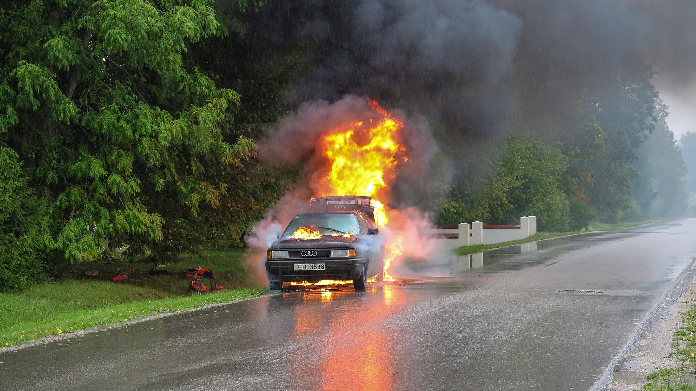
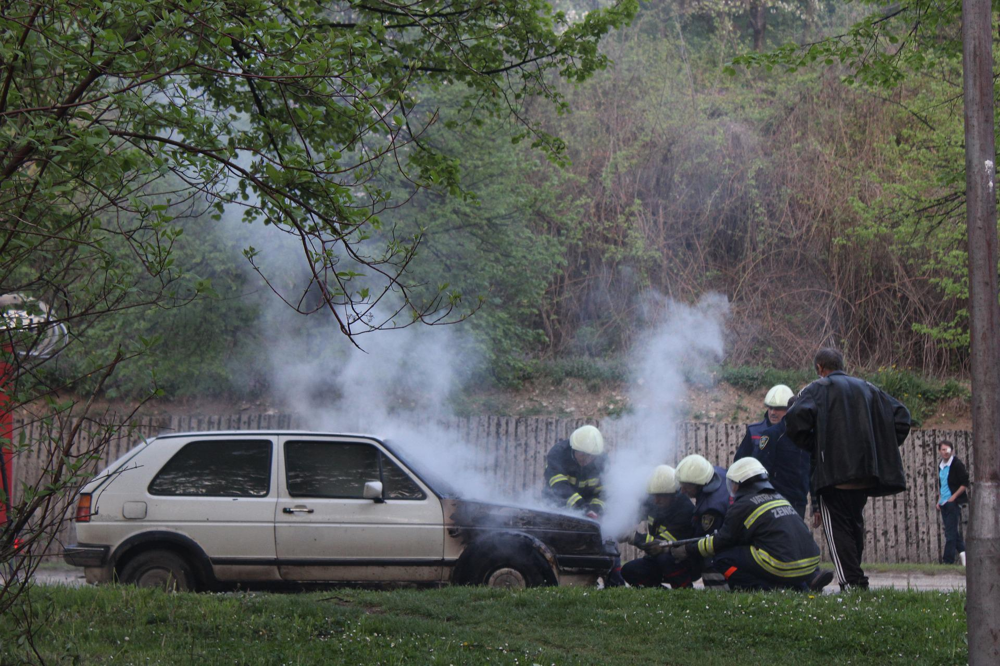

 >


1. Καλείς αρχικά το 199, ενημερώνεις την Πυροσβεστική και ακολουθείς προσεχτικά τις οδηγίες της. Δώστε σαφείς πληροφορίες για: – την τοποθεσία και το ακριβές σημείο που βρίσκεστε, – την τοποθεσία, το ακριβές σημείο και την κατεύθυνση της πυρκαγιάς. – το είδος της βλάστησης που καίγεται.
2. Κλείνεις όλες τις παροχές φυσικού αερίου και υγρών καυσίμων μέσα κι έξω από το σπίτι
3. Απομονώνεις τη φωτιά και τον καπνό, κλείνοντας όλες τις πόρτες και τα παράθυρα του σπιτιού, καθώς η εισροή οξυγόνου βοηθά τη φωτιά να επεκταθεί
4. Εάν ο κίνδυνος είναι μεγάλος κι η φωτιά απειλεί την κατοικία (αν κι η ορατότητα είναι μειωμένη από τους καπνούς, άναψε τα φώτα, για να διευκολύνεις το έργο των πυροσβεστών), προβαίνεις σε εκκένωση του χώρου, εφόσον υπάρχει εντολή από κάποιον αρμόδιο και είναι εφικτό
5. Αν κατά την έξοδό σου αναγκαστείς να περάσεις μέσα από τον καπνό, φρόντισε το κεφάλι σου να βρίσκεται σε χαμηλότερο επίπεδο από αυτόν, μιας και κινείται προς τα πάνω και συγκεντρώνεται στην οροφή του κτιρίου αρχικά
6. Επίσης είναι σημαντικό κατά την έξοδό σου να μη χάνεις χρόνο μαζεύοντας προσωπικά πράγματα (η ζωή προέχει)
7. Πριν ανοίξεις την οποιαδήποτε πόρτα, πιάσε πρώτα το πόμολό της. Αν είναι ζεστό, προσπάθησε να βρεις μια άλλη διέξοδο
8.Ενημερώνεις, ή αν είναι ασφαλές, απομακρύνεις ανθρώπους ή ζωάκια που βρίσκονται σε κίνδυνο
Αν είναι δυνατό, προσπαθείς για την άμεση κατάσβεση της φωτιάς με τον κατάλληλο ωστόσο τρόπο
10. Εφόσον υπάρχουν παραπάνω από έναν πυροσβεστήρες, είναι προτιμότερο να ανοίγονται όλοι μαζί κι όχι ένας ένας
11. Αν πιάσουν φωτιά τα ρούχα σου, καλύπτεις το πρόσωπό σου με τα χέρια σου, ξαπλώνεις στο έδαφος και αρχίζεις να κυλιέσαι. Διαφορετικά, βρέχεις μια πετσέτα ή κουβέρτα και την τυλίγεις γύρω από το σώμα σου (ή το σώμα κάποιου άλλου, αν δεις να βρίσκεται σ’ αυτήν την κατάσταση)
12. Όπως είπα και πιο πάνω, ο πανικός δεν μπορεί να σε βοηθήσει πουθενά σε μια τέτοια κατάσταση, αντιθέτως. Φρόντισε λοιπόν να παραμείνεις ψύχραιμος και να ακολουθήσεις πιστά τις οδηγίες που δίνουν οι αρμόδιοι σε τέτοιες περιπτώσεις Τώρα, όσον αφορά τη βοήθεια συνανθρώπων σου, ή ακόμα και ζώων, που βρίσκονται σε δύσκολη κατάσταση από τους καπνούς της φωτιάς